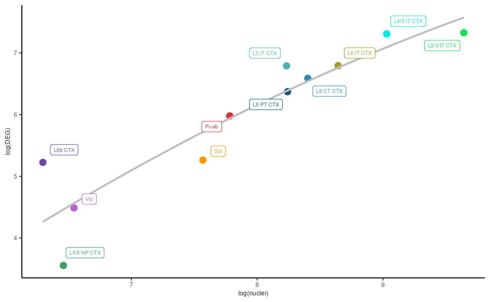
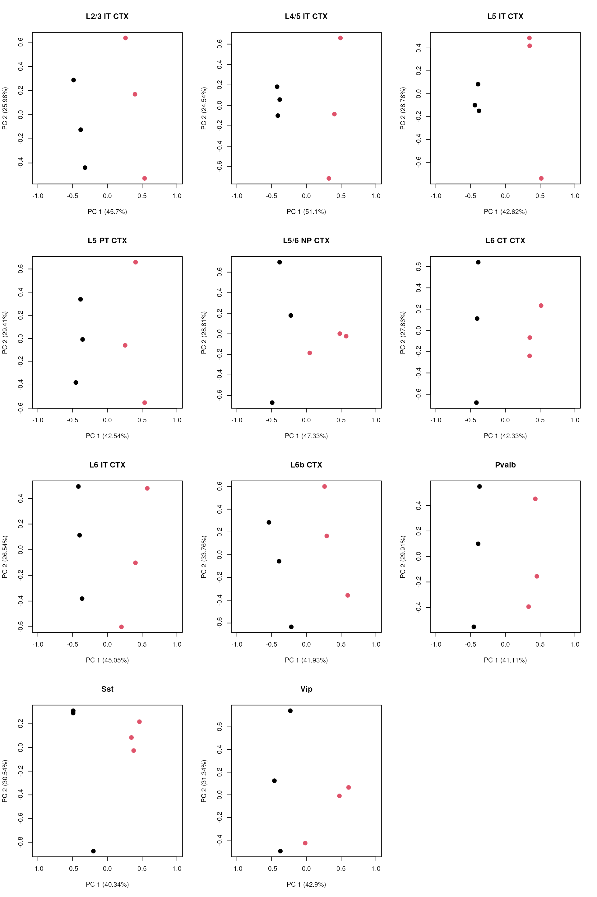
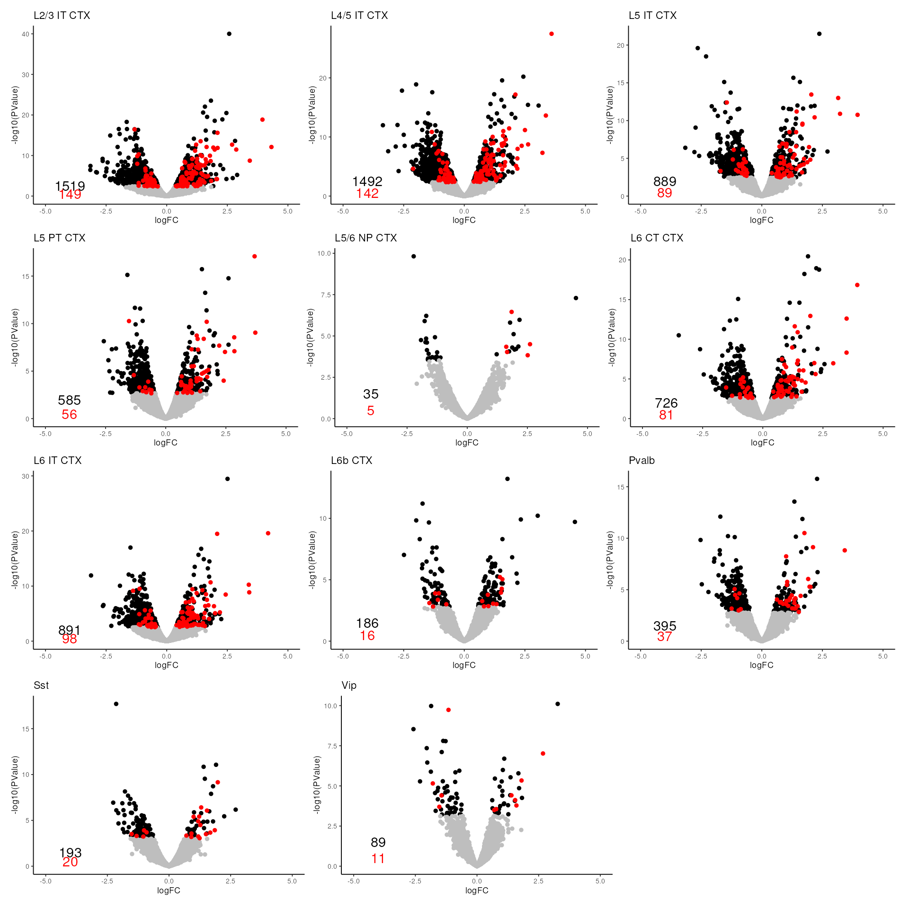
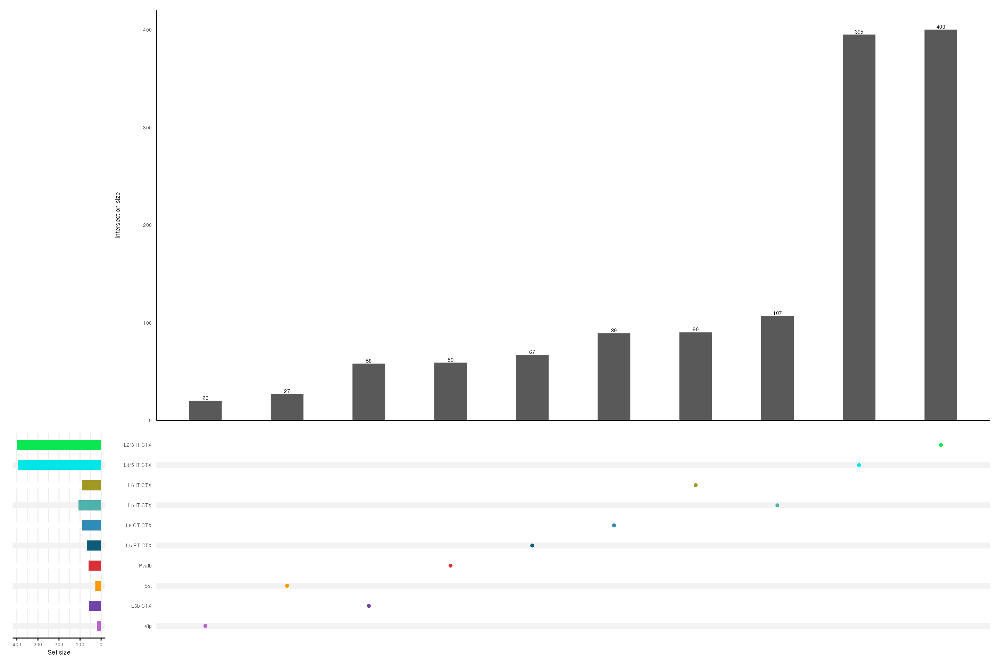

vignettes/2_pb_dgea.Rmd
2_pb_dgea.RmdPseudo-bulk of single-nuclear RNA-seq data is available here.
The list of negative control genes is available here. These genes are not influenced by the biological effect of interest. The list of positive control genes is available here. These genes are known to be differentially expressed with respect to the biological effect of interest.
The code used in this analysis has been deposited into Github, and can be available here.
The differential expression (DE) analysis was carried out with edgeR. Remove Unwanted Variation (RUV) normalization is implemented in the RUVSeq package. To normalize raw data before RUV and to visualize the Principal Component Analysis (PCA) of UQ + RUV normalization, we used the EDASeq package. Some plots were visualized using the ggplot2 package. The Upset plot was visualized using the UpSetR and the ComplexUpset packages.
For each neuronal cell-type with more than 500 cells, the differential gene expression analysis was carried out with a negative binomial generalized linear model (GLM) on pseudo-bulk samples.
# Load pseudo-bulk data, negative and positive control genes
data("Tutorial2_DEG_snRNAseq", package = "AtlasCortexSD")
# load(system.file(file.path('extdata',
# 'Tutorial2_DEG_snRNAseq.rda'), package='SDsnRNAseq'))Then, we normalized the raw counts with the upper-quartile method, using the betweenLaneNormalization function of the EDASeq package with option which=“upper”. To account for latent confounders, we computed a factor of unwanted variation on the normalized data, using the RUVs function of the RUVSeq package with k=2 and using as negative control genes a list of genes previously characterized as non-differential in sleep deprivation in a large microarray meta-analysis. Specifically, 10% of negative control genes were randomly selected to be used for evaluation and the remaining control genes were used to fit RUV normalization.
# UQ + RUV normalization The 10% of meta-analysis negative
# control genes were randomly selected.
set.seed(23)
random_ng <- sample(neg_ctrl$x, round(length(neg_ctrl$x) * 0.1))
# The remaining control genes were used to fit RUV
# normalization.
neg_ctrl <- neg_ctrl[!(neg_ctrl$x %in% random_ng), ]
neg_ctrl <- intersect(rownames(pb), neg_ctrl)
# UQ normalization
ct_counts <- lapply(pb_ct, function(x) as.matrix(counts(x)))
uq <- lapply(ct_counts, function(u) betweenLaneNormalization(u, which = "upper"))
# RUV normalization
ruv2_expr_data <- ruv2_w <- list()
for (i in seq_along(unique(pb$azimuth_labels))) {
# A matrix specifying the replicates constructed
groups <- makeGroups(pb_ct[[i]]$condition)
# The matrix of normalized counts was saved in a list object
ruv2_expr_data[[i]] <- RUVs(uq[[i]], cIdx = neg_ctrl, scIdx = groups,
k = 2)
# The factors of unwanted variation were saved in a list
# object
ruv2_w[[i]] <- ruv2_expr_data[[i]]$W
}We then used the Bioconductor edgeR package to perform differential expression after filtering the lowly expressed genes with the filterByExpr function (with default parameters). The factor of unwanted variation was added in the design matrix. The differential gene expression analysis was computed with the function glmLRT by specifying “SD-HC” (Sleep Deprived vs Home Cage Control) as contrast and offset term equal to zero, since normalization was already carried out by the RUV factor.
res_uq_ruv2 <- df_uq_ruv2 <- list()
for (i in seq_along(unique(pb$azimuth_labels))) {
y <- DGEList(counts(pb_ct[[i]]), samples = colData(pb_ct[[i]]))
# The genes were filtered for each cell-type
keep <- filterByExpr(y, group = pb_ct[[i]]$condition)
y <- y[keep, ]
# Upper-quartile normalization
y <- calcNormFactors(y, method = "upperquartile")
# Design Matrix
design <- model.matrix(~0 + y$samples$condition + ruv2_w[[i]],
y$samples)
colnames(design) <- c("HC", "SD", "W_1", "W_2")
y <- estimateDisp(y, design)
fit <- glmFit(y, design)
# Contrast creation (SD vs HC)
contrast <- makeContrasts(SD - HC, levels = design)
res_uq_ruv2[[i]] <- glmLRT(fit, contrast = contrast)
df_uq_ruv2[[i]] <- as.data.frame(res_uq_ruv2[[i]]$table)
df_uq_ruv2[[i]] <- df_uq_ruv2[[i]][order(df_uq_ruv2[[i]]$PValue),
]
FDR <- as.data.frame(topTags(res_uq_ruv2[[i]], n = length(rownames(pb)))[,
5])
df_uq_ruv2[[i]] <- cbind(df_uq_ruv2[[i]], FDR)
df_uq_ruv2[[i]] <- df_uq_ruv2[[i]][order(df_uq_ruv2[[i]]$FDR),
]
}
names(df_uq_ruv2) <- unique(pb$azimuth_labels)We used the Benjamini-Hochberg procedure to control for the false discovery rate (FDR), i.e., we considered as differentially expressed those genes that had an adjusted p-value less than 5%.
# N. of nuclei
n_nuclei <- matrix(pb$ncells, 11, 6, byrow = TRUE)
n_nuclei <- rowSums(n_nuclei)
# DEA results for differentially expressed genes were selected
df_degs <- lapply(df_uq_ruv2, function(u) u[u$FDR < 0.05, ])
# N. of DEGs
n_degs <- lapply(df_degs, function(u) length(rownames(u)))
# N. of DE positive control genes
n_de_posctrl <- lapply(df_degs, function(u) length(intersect(rownames(u),
posctrl$Gene_ID)))We visualized the scatter plot of the logarithm of the number of nuclei and the logarithm of the number of differential genes expressed.
label_color <- c("Astro", "Car3", "Endo", "L2/3 IT CTX", "L4/5 IT CTX",
"L5 IT CTX", "L5 PT CTX", "L5/6 NP CTX", "L6 CT CTX", "L6 IT CTX",
"L6b CTX", "Lamp5", "Micro-PVM", "Oligo", "Pvalb", "SMC-Peri",
"Sncg", "Sst", "Sst Chodl", "Vip", "VLMC")
subclass_color <- c("#957b46", "#5100FF", "#c95f3f", "#0BE652", "#00E5E5",
"#50B2AD", "#0D5B78", "#3E9E64", "#2D8CB8", "#A19922", "#7044AA",
"#DA808C", "#94AF97", "#744700", "#D93137", "#4c1130", "#ffff00",
"#FF9900", "#B1B10C", "#B864CC", "#a9bd4f")
names(subclass_color) <- label_color
subclass_color <- data.frame(subclass_color)
subclass_color$Label <- rownames(subclass_color)
colnames(subclass_color) <- c("color", "Label")
rm_labels <- subclass_color[rownames(subclass_color) %in% intersect(rownames(subclass_color),
levels(factor(pb$azimuth_labels))), ]
neuronal_color <- rm_labels$color
names(neuronal_color) <- rm_labels$Label
tab <- as.data.frame(cbind(n_nuclei, as.matrix(n_degs)))
colnames(tab) <- c("nuclei", "DEG")
tab$Label <- levels(factor(pb$azimuth_labels))
tab$DEG <- as.numeric(tab$DEG)
tab$nuclei <- as.numeric(tab$nuclei)
# Scatter plot of log(nuclei) vs log(DEGs)
ggplot(tab, aes(x = log(nuclei), y = log(DEG))) + geom_point(aes(color = Label),
size = 3) + scale_color_manual(values = neuronal_color) + theme_classic() +
theme(legend.position = "none", axis.text = element_text(size = 7),
axis.title = element_text(size = 7)) + stat_smooth(method = "lm",
formula = y ~ poly(x, 2), se = FALSE, col = "grey") + geom_label_repel(aes(label = Label),
size = 2, box.padding = 0.5, point.padding = 0, segment.color = "grey50",
min.segment.length = unit(1.5, "lines"), colour = neuronal_color)
Then, we visualized the PCA for each cell-type.
label <- levels(factor(pb$azimuth_labels))
set_ct <- lapply(pb_ct, function(u) newSeqExpressionSet(as.matrix(round(counts(u))),
phenoData = data.frame(colData(u), row.names = colnames(u))))
set_ct <- lapply(set_ct, function(u) betweenLaneNormalization(u, which = "upper"))
set_ruv2 <- list()
for (i in seq_along(unique(pb$azimuth_labels))) {
# A matrix specifying the replicates constructed
groups <- makeGroups(pb_ct[[i]]$condition)
# k = 2 The matrix of normalized counts was saved in a list
# object
set_ruv2[[i]] <- RUVs(set_ct[[i]], cIdx = neg_ctrl, scIdx = groups,
k = 2)
}
par(mfrow = c(4, 3))
for (i in seq_along(label)) {
plotPCA(set_ruv2[[i]], xlim = c(-1, 1), label = FALSE, pch = 20,
theme_size = 7, col = as.numeric(as.factor(set_ruv2[[i]]$condition)),
cex = 2, main = paste(label[i], sep = " "))
}
We visualized the volcano plot and histogram for each cell-type.
## Volcano plot of all cell-types
for (i in seq_along(df_uq_ruv2)) {
df_uq_ruv2[[i]]$Significance <- "No Significant"
df_uq_ruv2[[i]]$Significance[df_uq_ruv2[[i]]$FDR < 0.05] <- "Significant"
inter <- intersect(rownames(df_uq_ruv2[[i]][df_uq_ruv2[[i]]$FDR <
0.05, ]), posctrl$Gene_ID)
df_uq_ruv2[[i]]$Significance[rownames(df_uq_ruv2[[i]]) %in% inter] <- "SignificantPos"
}
p1 <- ggplot(data = df_uq_ruv2[[1]], aes(x = logFC, y = -log10(PValue),
col = Significance)) + geom_point(data = df_uq_ruv2[[1]][(df_uq_ruv2[[1]]$Significance ==
"Significant" | df_uq_ruv2[[1]]$Significance == "No Significant"),
], size = 1) + geom_point(data = df_uq_ruv2[[1]][df_uq_ruv2[[1]]$Significance ==
"SignificantPos", ], size = 1) + xlim(-5, 5) + theme_classic(base_size = 7) +
theme(legend.position = "none") + scale_color_manual(values = c(Significant = "black",
`No Significant` = "grey", SignificantPos = "red")) + ggtitle("L2/3 IT CTX") +
annotate("text", x = -4, y = 2.5, label = n_degs[[1]]) + annotate("text",
x = -4, y = 0.5, label = n_de_posctrl[[1]], color = "red")
p2 <- ggplot(data = df_uq_ruv2[[2]], aes(x = logFC, y = -log10(PValue),
col = Significance)) + geom_point(data = df_uq_ruv2[[2]][(df_uq_ruv2[[2]]$Significance ==
"Significant" | df_uq_ruv2[[2]]$Significance == "No Significant"),
], size = 1) + geom_point(data = df_uq_ruv2[[2]][df_uq_ruv2[[2]]$Significance ==
"SignificantPos", ], size = 1) + xlim(-5, 5) + theme_classic(base_size = 7) +
theme(legend.position = "none") + scale_color_manual(values = c(Significant = "black",
`No Significant` = "grey", SignificantPos = "red")) + ggtitle("L4/5 IT CTX") +
annotate("text", x = -4, y = 2.5, label = n_degs[[2]]) + annotate("text",
x = -4, y = 0.5, label = n_de_posctrl[[2]], color = "red")
p3 <- ggplot(data = df_uq_ruv2[[3]], aes(x = logFC, y = -log10(PValue),
col = Significance)) + geom_point(data = df_uq_ruv2[[3]][(df_uq_ruv2[[3]]$Significance ==
"Significant" | df_uq_ruv2[[3]]$Significance == "No Significant"),
], size = 1) + geom_point(data = df_uq_ruv2[[3]][df_uq_ruv2[[3]]$Significance ==
"SignificantPos", ], size = 1) + xlim(-5, 5) + theme_classic(base_size = 7) +
theme(legend.position = "none") + scale_color_manual(values = c(Significant = "black",
`No Significant` = "grey", SignificantPos = "red")) + ggtitle("L5 IT CTX") +
annotate("text", x = -4, y = 2, label = n_degs[[3]]) + annotate("text",
x = -4, y = 0.5, label = n_de_posctrl[[3]], color = "red")
p4 <- ggplot(data = df_uq_ruv2[[4]], aes(x = logFC, y = -log10(PValue),
col = Significance)) + geom_point(data = df_uq_ruv2[[4]][(df_uq_ruv2[[4]]$Significance ==
"Significant" | df_uq_ruv2[[4]]$Significance == "No Significant"),
], size = 1) + geom_point(data = df_uq_ruv2[[4]][df_uq_ruv2[[4]]$Significance ==
"SignificantPos", ], size = 1) + xlim(-5, 5) + theme_classic(base_size = 7) +
theme(legend.position = "none") + scale_color_manual(values = c(Significant = "black",
`No Significant` = "grey", SignificantPos = "red")) + ggtitle("L5 PT CTX") +
annotate("text", x = -4, y = 2, label = n_degs[[4]]) + annotate("text",
x = -4, y = 0.5, label = n_de_posctrl[[4]], color = "red")
p5 <- ggplot(data = df_uq_ruv2[[5]], aes(x = logFC, y = -log10(PValue),
col = Significance)) + geom_point(data = df_uq_ruv2[[5]][(df_uq_ruv2[[5]]$Significance ==
"Significant" | df_uq_ruv2[[5]]$Significance == "No Significant"),
], size = 1) + geom_point(data = df_uq_ruv2[[5]][df_uq_ruv2[[5]]$Significance ==
"SignificantPos", ], size = 1) + xlim(-5, 5) + theme_classic(base_size = 7) +
theme(legend.position = "none") + scale_color_manual(values = c(Significant = "black",
`No Significant` = "grey", SignificantPos = "red")) + ggtitle("L5/6 NP CTX") +
annotate("text", x = -4, y = 1.5, label = n_degs[[5]]) + annotate("text",
x = -4, y = 0.5, label = n_de_posctrl[[5]], color = "red")
p6 <- ggplot(data = df_uq_ruv2[[6]], aes(x = logFC, y = -log10(PValue),
col = Significance)) + geom_point(data = df_uq_ruv2[[6]][(df_uq_ruv2[[6]]$Significance ==
"Significant" | df_uq_ruv2[[6]]$Significance == "No Significant"),
], size = 1) + geom_point(data = df_uq_ruv2[[6]][df_uq_ruv2[[6]]$Significance ==
"SignificantPos", ], size = 1) + xlim(-5, 5) + theme_classic(base_size = 7) +
theme(legend.position = "none") + scale_color_manual(values = c(Significant = "black",
`No Significant` = "grey", SignificantPos = "red")) + ggtitle("L6 CT CTX") +
annotate("text", x = -4, y = 2, label = n_degs[[6]]) + annotate("text",
x = -4, y = 0.5, label = n_de_posctrl[[6]], color = "red")
p7 <- ggplot(data = df_uq_ruv2[[7]], aes(x = logFC, y = -log10(PValue),
col = Significance)) + geom_point(data = df_uq_ruv2[[7]][(df_uq_ruv2[[7]]$Significance ==
"Significant" | df_uq_ruv2[[7]]$Significance == "No Significant"),
], size = 1) + geom_point(data = df_uq_ruv2[[7]][df_uq_ruv2[[7]]$Significance ==
"SignificantPos", ], size = 1) + xlim(-5, 5) + theme_classic(base_size = 7) +
theme(legend.position = "none") + scale_color_manual(values = c(Significant = "black",
`No Significant` = "grey", SignificantPos = "red")) + ggtitle("L6 IT CTX") +
annotate("text", x = -4, y = 2, label = n_degs[[7]]) + annotate("text",
x = -4, y = 0.5, label = n_de_posctrl[[7]], color = "red")
p8 <- ggplot(data = df_uq_ruv2[[8]], aes(x = logFC, y = -log10(PValue),
col = Significance)) + geom_point(data = df_uq_ruv2[[8]][(df_uq_ruv2[[8]]$Significance ==
"Significant" | df_uq_ruv2[[8]]$Significance == "No Significant"),
], size = 1) + geom_point(data = df_uq_ruv2[[8]][df_uq_ruv2[[8]]$Significance ==
"SignificantPos", ], size = 1) + xlim(-5, 5) + theme_classic(base_size = 7) +
theme(legend.position = "none") + scale_color_manual(values = c(Significant = "black",
`No Significant` = "grey", SignificantPos = "red")) + ggtitle("L6b CTX") +
annotate("text", x = -4, y = 1.5, label = n_degs[[8]]) + annotate("text",
x = -4, y = 0.5, label = n_de_posctrl[[8]], color = "red")
p9 <- ggplot(data = df_uq_ruv2[[9]], aes(x = logFC, y = -log10(PValue),
col = Significance)) + geom_point(data = df_uq_ruv2[[9]][(df_uq_ruv2[[9]]$Significance ==
"Significant" | df_uq_ruv2[[9]]$Significance == "No Significant"),
], size = 1) + geom_point(data = df_uq_ruv2[[9]][df_uq_ruv2[[9]]$Significance ==
"SignificantPos", ], size = 1) + xlim(-5, 5) + theme_classic(base_size = 7) +
theme(legend.position = "none") + scale_color_manual(values = c(Significant = "black",
`No Significant` = "grey", SignificantPos = "red")) + ggtitle("Pvalb") +
annotate("text", x = -4, y = 1.5, label = n_degs[[9]]) + annotate("text",
x = -4, y = 0.5, label = n_de_posctrl[[9]], color = "red")
p10 <- ggplot(data = df_uq_ruv2[[10]], aes(x = logFC, y = -log10(PValue),
col = Significance)) + geom_point(data = df_uq_ruv2[[10]][(df_uq_ruv2[[10]]$Significance ==
"Significant" | df_uq_ruv2[[10]]$Significance == "No Significant"),
], size = 1) + geom_point(data = df_uq_ruv2[[10]][df_uq_ruv2[[10]]$Significance ==
"SignificantPos", ], size = 1) + xlim(-5, 5) + theme_classic(base_size = 7) +
theme(legend.position = "none") + scale_color_manual(values = c(Significant = "black",
`No Significant` = "grey", SignificantPos = "red")) + ggtitle("Sst") +
annotate("text", x = -4, y = 1.5, label = n_degs[[10]]) + annotate("text",
x = -4, y = 0.5, label = n_de_posctrl[[10]], color = "red")
p11 <- ggplot(data = df_uq_ruv2[[11]], aes(x = logFC, y = -log10(PValue),
col = Significance)) + geom_point(data = df_uq_ruv2[[11]][(df_uq_ruv2[[11]]$Significance ==
"Significant" | df_uq_ruv2[[11]]$Significance == "No Significant"),
], size = 1) + geom_point(data = df_uq_ruv2[[11]][df_uq_ruv2[[11]]$Significance ==
"SignificantPos", ], size = 1) + xlim(-5, 5) + theme_classic(base_size = 7) +
theme(legend.position = "none") + scale_color_manual(values = c(Significant = "black",
`No Significant` = "grey", SignificantPos = "red")) + ggtitle("Vip") +
annotate("text", x = -4, y = 1.5, label = n_degs[[11]]) + annotate("text",
x = -4, y = 0.5, label = n_de_posctrl[[11]], color = "red")
# Blank space
p12 <- ggplot(data = df_uq_ruv2[[11]], aes(x = logFC, y = -log10(PValue),
col = Significance)) + xlim(-5, 5) + theme_classic(base_size = 7) +
theme(legend.position = "none")
(p1 | p2 | p3)/(p4 | p5 | p6)/(p7 | p8 | p9)/(p10 | p11 | plot_spacer())
For Glutamatergic and GABAergic neurons, we used the upset function of the UpSetR package to identify the list of unique differentially expression genes for each cell-type.
df_degs <- lapply(df_uq_ruv2, function(u) rownames(u[u$FDR < 0.05, ]))
# Since the p-value distribution wasn't good, the L6b CTX label was removed
ll <- list("L2/3 IT CTX" = df_degs[[1]], "L4/5 IT CTX" = df_degs[[2]],
"L5 IT CTX" = df_degs[[3]], "L5 PT CTX" = df_degs[[4]],
"L6 CT CTX" = df_degs[[6]], "L6 IT CTX" = df_degs[[7]],
"L6b CTX" = df_degs[[8]],
"Pvalb" = df_degs[[9]], "Sst" = df_degs[[10]], "Vip" = df_degs[[11]])
df.edgeRList <- fromList(ll)
upset(df.edgeRList, colnames(df.edgeRList)[1:10],
sort_intersections_by = c("degree", "cardinality"),
sort_intersections = "ascending",
name = "", width_ratio = 0.1, keep_empty_groups = TRUE,
queries = list(
upset_query(set = "L2/3 IT CTX", fill = "#0BE652"),
upset_query(set = "L4/5 IT CTX", fill = "#00E5E5"),
upset_query(set = "L5 IT CTX", fill = "#50B2AD"),
upset_query(set = "L5 PT CTX", fill = "#0D5B78"),
upset_query(set = "L6 CT CTX", fill = "#2D8CB8"),
upset_query(set = "L6 IT CTX", fill = "#A19922"),
upset_query(set = "L6b CTX", fill = "#7044AA"),
upset_query(set = "Pvalb", fill = "#D93137"),
upset_query(set = "Sst", fill = "#FF9900"),
upset_query(set = "Vip", fill = "#B864CC")
),
intersections = list(
# Unique DEGs were visualized for each cell-type
"L2/3 IT CTX", "L4/5 IT CTX", "L5 IT CTX", "L5 PT CTX",
"L6 CT CTX", "L6 IT CTX", "L6b CTX", "Pvalb", "Sst", "Vip"
),
base_annotations = list(
"Intersection size" = (
intersection_size(
bar_number_threshold = 1, # show all numbers on top of bars
width = 0.4, # reduce width of the bars
text = list(size = 2)
)
# add some space on the top of the bars
+ scale_y_continuous(expand = expansion(mult = c(0, 0.05)))
+ theme(
# hide grid lines
panel.grid.major = element_blank(),
panel.grid.minor = element_blank(),
# show axis lines
axis.line = element_line(colour = "black")
)
)
),
stripes = upset_stripes(
geom = geom_segment(size = 3),
colors = c("grey95", "white")
),
matrix = intersection_matrix(
geom = geom_point(
shape = "circle filled",
size = 2,
stroke = 0
)
),
set_sizes = (
upset_set_size(geom = geom_bar(width = 0.5), filter_intersections = TRUE)
+ theme(
axis.line.x = element_line(colour = "black"),
axis.ticks.x = element_line()
)
),
themes = upset_default_themes(text = element_text(size = 7, color = "black"))) +
theme(plot.background = element_blank(),
panel.grid.major = element_blank(),
panel.grid.minor = element_blank(),
panel.border = element_blank())
## R version 4.3.2 (2023-10-31)
## Platform: x86_64-pc-linux-gnu (64-bit)
## Running under: Ubuntu 22.04.3 LTS
##
## Matrix products: default
## BLAS: /usr/lib/x86_64-linux-gnu/openblas-pthread/libblas.so.3
## LAPACK: /usr/lib/x86_64-linux-gnu/openblas-pthread/libopenblasp-r0.3.20.so; LAPACK version 3.10.0
##
## locale:
## [1] LC_CTYPE=en_US.UTF-8 LC_NUMERIC=C
## [3] LC_TIME=en_US.UTF-8 LC_COLLATE=en_US.UTF-8
## [5] LC_MONETARY=en_US.UTF-8 LC_MESSAGES=en_US.UTF-8
## [7] LC_PAPER=en_US.UTF-8 LC_NAME=C
## [9] LC_ADDRESS=C LC_TELEPHONE=C
## [11] LC_MEASUREMENT=en_US.UTF-8 LC_IDENTIFICATION=C
##
## time zone: Etc/UTC
## tzcode source: system (glibc)
##
## attached base packages:
## [1] stats4 stats graphics grDevices utils datasets
## [7] methods base
##
## other attached packages:
## [1] patchwork_1.1.3 ComplexUpset_1.3.3
## [3] UpSetR_1.4.0 ggrepel_0.9.4
## [5] ggplot2_3.4.4 RUVSeq_1.36.0
## [7] EDASeq_2.36.0 ShortRead_1.60.0
## [9] GenomicAlignments_1.38.0 Rsamtools_2.18.0
## [11] Biostrings_2.70.1 XVector_0.42.0
## [13] BiocParallel_1.36.0 edgeR_4.0.1
## [15] limma_3.58.1 scuttle_1.12.0
## [17] SingleCellExperiment_1.24.0 SummarizedExperiment_1.32.0
## [19] Biobase_2.62.0 GenomicRanges_1.54.1
## [21] GenomeInfoDb_1.38.0 IRanges_2.36.0
## [23] S4Vectors_0.40.1 BiocGenerics_0.48.0
## [25] MatrixGenerics_1.14.0 matrixStats_1.0.0
## [27] BiocStyle_2.30.0
##
## loaded via a namespace (and not attached):
## [1] RColorBrewer_1.1-3 jsonlite_1.8.7
## [3] magrittr_2.0.3 GenomicFeatures_1.54.1
## [5] farver_2.1.1 rmarkdown_2.25
## [7] fs_1.6.3 BiocIO_1.12.0
## [9] zlibbioc_1.48.0 ragg_1.2.6
## [11] vctrs_0.6.4 memoise_2.0.1
## [13] DelayedMatrixStats_1.24.0 RCurl_1.98-1.12
## [15] htmltools_0.5.6.1 S4Arrays_1.2.0
## [17] progress_1.2.2 curl_5.1.0
## [19] SparseArray_1.2.0 sass_0.4.7
## [21] bslib_0.5.1 desc_1.4.2
## [23] plyr_1.8.9 cachem_1.0.8
## [25] lifecycle_1.0.3 pkgconfig_2.0.3
## [27] Matrix_1.6-1.1 R6_2.5.1
## [29] fastmap_1.1.1 GenomeInfoDbData_1.2.11
## [31] digest_0.6.33 colorspace_2.1-0
## [33] AnnotationDbi_1.64.0 rprojroot_2.0.3
## [35] textshaping_0.3.7 RSQLite_2.3.2
## [37] hwriter_1.3.2.1 beachmat_2.18.0
## [39] labeling_0.4.3 filelock_1.0.2
## [41] fansi_1.0.5 mgcv_1.9-0
## [43] httr_1.4.7 abind_1.4-5
## [45] compiler_4.3.2 bit64_4.0.5
## [47] withr_2.5.2 DBI_1.1.3
## [49] highr_0.10 R.utils_2.12.2
## [51] biomaRt_2.58.0 MASS_7.3-60
## [53] rappdirs_0.3.3 DelayedArray_0.28.0
## [55] rjson_0.2.21 tools_4.3.2
## [57] R.oo_1.25.0 glue_1.6.2
## [59] restfulr_0.0.15 nlme_3.1-163
## [61] grid_4.3.2 generics_0.1.3
## [63] gtable_0.3.4 R.methodsS3_1.8.2
## [65] hms_1.1.3 xml2_1.3.5
## [67] utf8_1.2.4 pillar_1.9.0
## [69] stringr_1.5.0 splines_4.3.2
## [71] dplyr_1.1.3 BiocFileCache_2.10.1
## [73] lattice_0.22-4 aroma.light_3.32.0
## [75] rtracklayer_1.62.0 bit_4.0.5
## [77] deldir_1.0-9 tidyselect_1.2.0
## [79] locfit_1.5-9.8 knitr_1.45
## [81] gridExtra_2.3 xfun_0.40
## [83] statmod_1.5.0 stringi_1.7.12
## [85] yaml_2.3.7 evaluate_0.22
## [87] codetools_0.2-19 interp_1.1-4
## [89] tibble_3.2.1 BiocManager_1.30.22
## [91] cli_3.6.1 systemfonts_1.0.5
## [93] munsell_0.5.0 jquerylib_0.1.4
## [95] Rcpp_1.0.11 dbplyr_2.4.0
## [97] png_0.1-8 XML_3.99-0.14
## [99] parallel_4.3.2 pkgdown_2.0.7
## [101] blob_1.2.4 prettyunits_1.2.0
## [103] latticeExtra_0.6-30 jpeg_0.1-10
## [105] sparseMatrixStats_1.14.0 bitops_1.0-7
## [107] scales_1.2.1 purrr_1.0.2
## [109] crayon_1.5.2 rlang_1.1.1
## [111] KEGGREST_1.42.0 formatR_1.14